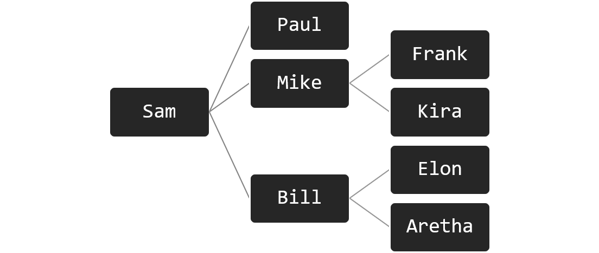

Common Table Expression
Mit Hilfe der Common Table Expression ist es Möglich Views zu erstellen, die nur in der Laufzeit der Abfrage existieren (also anders als klassische Views nicht gespeichert werden). Diese Views haben aber auch eine zweite wichtige Eigenschaft: Sie können rekursiv aufgerufen werden. In MariaDB kann so ein View mit Hilfe der with recursive Klausel erzeugt werden.
Beispiel Datenbank
Unterhalb erzeugen wir zuerst eine Simple Datenbank, die einen Entitätstyp enthält, der mit sich selbst in Beziehung steht. Die Beziehung bildet folgende Mitarbeiter*innen-Hierarchie ab:

1 2 3 4 5 6 7 8 9 10 11 | |
Im Modell würde die hier abgebildete Datenbank wie folgt aussehen. Auch hier ist zu beachten, dass der Fremdschlüssel boss_id nicht im Modell dargestellt wird.
Rekursivbeziehung abfragen (Eine Ebene)
Nun wollen wir die Ebenen der Hierarchie abwandern und ermitteln, welche Mitarbeiter*innen sich auf welcher Hierarchieebene befinden. Das ist in der Praxis aber gar nicht so einfach.
Es fällt uns leicht, zwei aneinander angrenzende Ebenen der Hierarchie Abzufragen. Das können wir machen, indem wir die Tabelle mit sich selbst durch einen JOIN verbinden. So können wir die Bossebene und die Ebene der direkten Untergebenen abbilden.
1 2 3 4 | |
Rekursivbeziehung abfragen (Mehrere Ebenen)
Das funktioniert zwar gut, aber wir sehen immer nur welche Person, welcher anderen Person übergeordnet/untergeben ist. Was wir hieraus nur schwer rekonstruieren können, ist die Gesamthierarchie. Wir sehen hier z.B. nicht, welche Mitarbeiter*in sich auf welcher Ebene der Hierarchie befindet und wieviele Ebenen unsere Hierarchie überhaupt hat. Das müssen wir uns nach wie vor aus den Ergebnissen mühsam zusammensuchen.
Natürlich wäre es möglich, das oben gezeigte Statement um zusätzliche Ebenen zu erweitern und so die Hierarchie abzubilden. Im Statement unterhalb würden wir nun z.B. drei aneinander angrenzende Level der Hierarchie sehen. Wenn unsere Hierachie aber tatsächlich vier Level tief ist, sehen wir dennoch nicht alles.
1 2 3 4 5 6 | |
Was ist hier unser Problem? Unser Problem hier ist, dass unser SQL-Statement an die Hierarchie angepasst werden muss. Abhängig davon, wieviele Ebenen diese Hierarchie hat, müssen wir mehr oder weniger JOIN Operationen in unser Statement einbauen. Hat die Hierarchie fünf Ebenen, brauchen wir die employee-Tabelle fünfmal. Hat die Hierarchie 12 Ebenen, brauchen wir die employee-Tablle 12 mal usw..
Rekursivbeziehung abfragen (Alle Ebene)
Hier kommt nun die Common Table Expression ins Spiel. Mit Hilfe dieses SQL-Konstrukts, können wir unsere Hierarchie abwandern, ohne die Tiefe der Hierarchie bereits zu kennen. Das erreichen wir, indem wir das CTE-Statement rekursiv aufrufen können.
Im Beispiel unterhalb besteht der View im CTE aus zwei Teilen. Im ersten Teil ermitteln wir den Startpunkt unserer Hierarchie. Das sind jene Mitarbeiter*innen, die ganz oben stehen und selbst keine Vorgesetzte besitzen (where boss_id is null). Im zweiten Teil des Statements fügen wir dann alle Personen hinzu die auf der nächsten, darunterliegenden Ebene stehen. Hierzu rufen wir das CTE selbst wieder auf (from recursive_view as parent) und fügen die nächste Ebene mit Hilfe eines JOIN dazu. So bauen wir in mehreren Iterationen die Hierarchie auf.
Am ende des CTE kommt ein select welches das CTE zu guter letzt aufruft. Dadurch erfolgt dann die Ausgabe. Achtung: Dieser Aufruf ist zwingend erforderlich und muss immer unmittelbar hinter der with-Klausel folgen.
1 2 3 4 5 6 7 8 9 10 11 12 13 14 15 | |
Das vollst√§ndige Beispiel (inklusive Beispieldaten) k√∂nnt ihr euch üìÅ hier herunterladen.